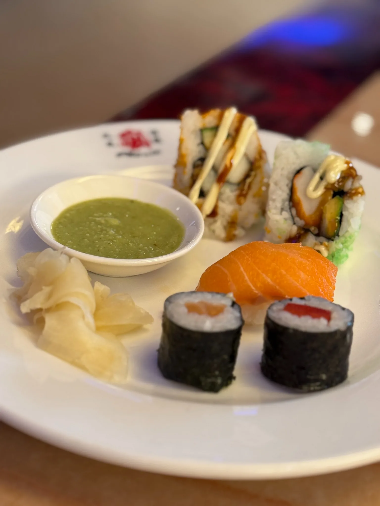

Maki · Nigiri · vegetarisch
Frisches Sushi.
Eine abwechslungsreiche Sushi-Auswahl gehört bei uns zum Buffet dazu – klassisch, frisch und mit Varianten für unterschiedliche Geschmäcker.
Sushi im Phönix
Kleine Rollen. Große Vielfalt.
Von klassischen Maki über Nigiri bis zu vegetarischen Rollen: Unsere Sushi-Auswahl ergänzt das warme Buffet und sorgt für Abwechslung auf dem Teller.
Probieren Sie verschiedene Varianten als Vorspeise, kombinieren Sie Sushi mit warmen Gerichten oder machen Sie daraus Ihre ganz persönliche Auswahl.
Für jeden Geschmack
- Maki und klassische Rollen
- Nigiri mit verschiedenen Belägen
- Vegetarische Varianten
- Knusprige und kreative Sushi-Varianten

Kombinieren erlaubt
Sushi trifft Buffet & Grill.
Genau das macht das Phönix aus: Sie müssen sich nicht entscheiden. Starten Sie mit Sushi, wechseln Sie zum warmen Buffet und stellen Sie sich später ein frisches Teppanyaki-Gericht zusammen.
Heute Sushi?
Rufen Sie uns an und reservieren Sie Ihren Tisch.